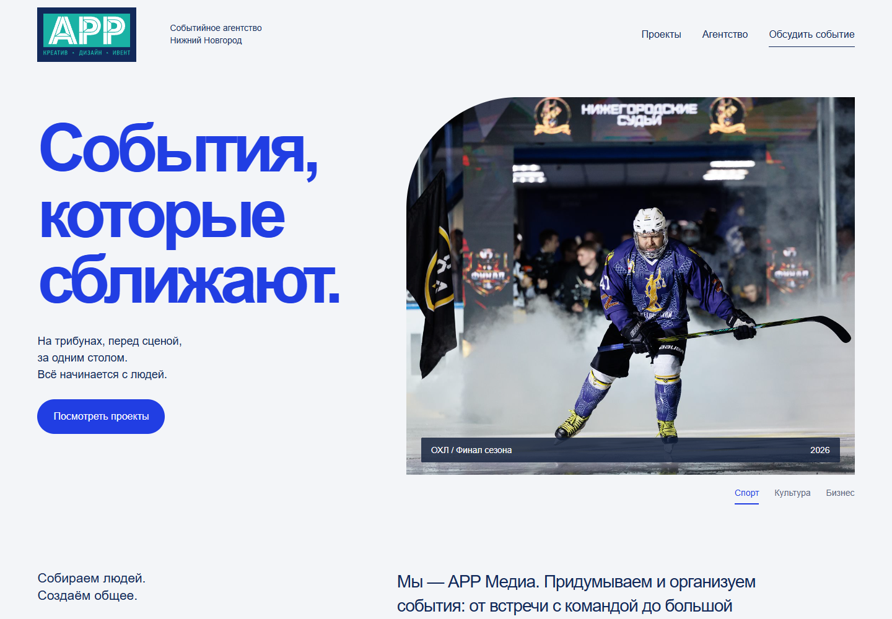
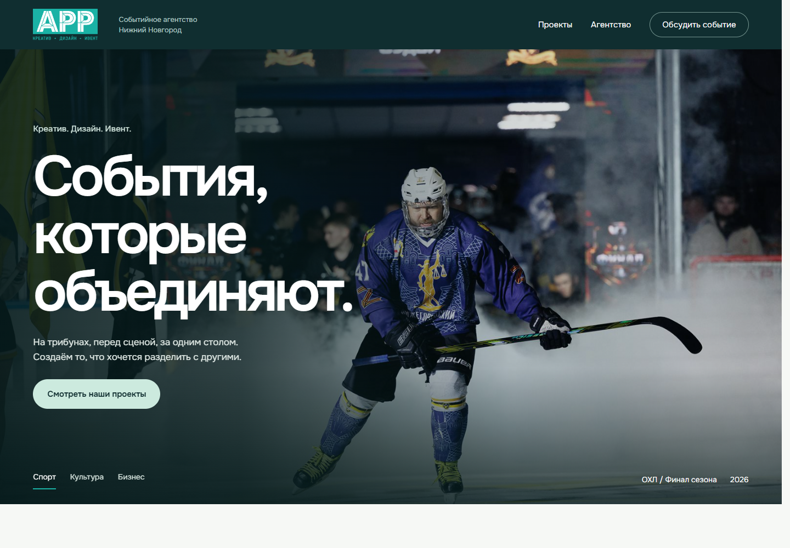
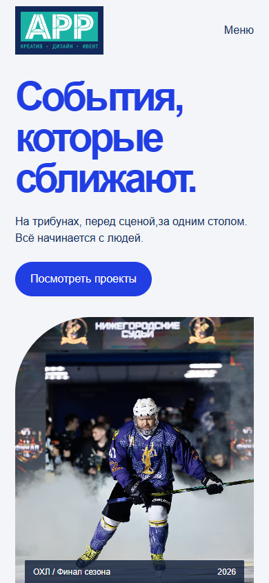
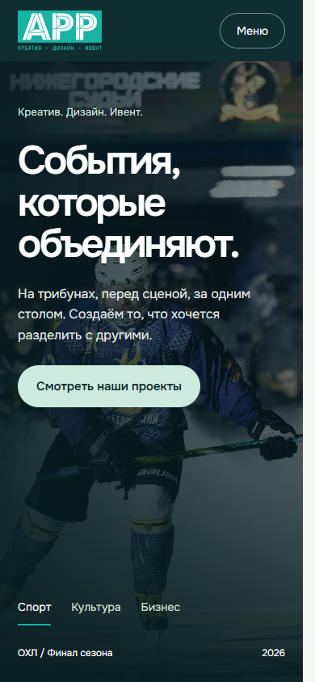

Доработка главной, страниц проектов и мобильной версии. Оригинальный зарегистрированный логотип сохранён без изменения формы, цветов и пропорций. Снимки «до» сделаны непосредственно перед правками.








Что изменилось
| Часть сайта | Было | Стало |
|---|---|---|
| Шапка | Прокручивалась вместе со страницей; высота 112 px на компьютере и 88 px на телефоне. | Всегда сверху: 90 px на компьютере, 76 px на телефоне. Подсветка текущего раздела и тень при прокрутке. Якорные переходы учитывают её высоту. |
| Логотип | Оригинальный знак на отдельной тёмно-синей плашке. | Тот же SVG встроен в тёмную шапку и подвал. Побайтное совпадение с исходным файлом подтверждено SHA-256. |
| Первый экран | Синий текст и фотография стояли отдельными колонками; на телефоне фотография уходила ниже. | Крупный кадр события, единая композиция с белым заголовком, читаемое затемнение под текстом. Переключение спорта, культуры и бизнеса по нажатию. |
| Типографика | Фактически использовался запасной Arial. | Локальный Onest: Regular и SemiBold. Уточнены размеры, межстрочные интервалы, переносы и длина текстовых строк. |
| Палитра | Ярко-синий акцент и сиреневый блок конкурировали с фирменным знаком. | Глубокий тёмно-зелёный, светлые нейтральные поверхности, мягкая мята и исходный бирюзовый логотипа. |
| Портфолио | Крупные разрозненные блоки, одинаковая логика подписей. | Уточнены пропорции фото, ритм сетки и подписи. Заключительный проект — горизонтальная композиция. Фильтры получили отчётливые состояния. |
| Движение | Резкая смена фотографии первого экрана. | Фото сначала загружается, затем мягко появляется. Однократное появление первого экрана. Системная настройка уменьшения движения отключает эффекты. |
| Мобильное управление | Меню было частью обычного потока. | Меню доступно из закреплённой шапки; закрывается после выбора, по Escape и при переходе к широкой версии. У кнопок достаточная область нажатия. |
Проверка
Проверены ширины 320, 390, 768, 1024, 1440 и 1920 px; закрепление шапки, положение якорей, подсветка разделов, фильтры, переходы в проекты, прямые ссылки, галереи, Escape и уменьшение движения. Оба начертания загружаются локально. Ошибок JavaScript и неудачных запросов ресурсов в проверке не обнаружено.


Это локальный дизайн-прототип. Тексты остаются редакторскими заготовками; CMS и публикация на основном домене в этот этап не входили. Макет в Figma этим изменением не обновлялся.